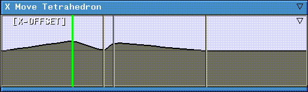
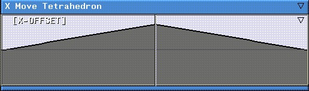
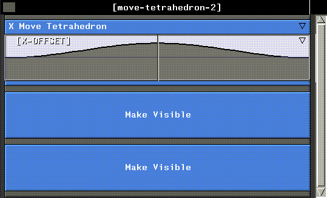

[N-World Contents] [Book Contents] [Prev] [Next] [Index]
Basics: Part 2
In this chapter you'll learn some additional script editing skills: moving cues, adding cues, changing curve types, and working with channels.
In this Chapter
You'll learn some additional editing methods for working in N-Dynamics, including:
Along the way, you'll learn a little more about how N-Dynamics works with objects.
Deleting a Script (from Memory)
Scripts must be loaded into memory before they can be animated. Unless you delete them from memory (or restart N·World), they'll always be there. Now that you've saved the script "move-tetrahedron" to disk, let's delete it from memory.
To delete a script:
1. (CLICK-L) on File>Delete Scripts.
- A menu of scripts currently loaded into memory is displayed.
2. (CLICK-L) on the scripts you want to delete.
- Since we only have one script loaded right now, (CLICK-L) on "move-tetrahedron". Selected scripts are highlighted in blue.
Figure 2.1 Selecting a script to delete
3. (CLICK-L) on Do it.
- The script is deleted from memory.
- Note. Deleting a script from memory does not delete referenced objects from N-Geometry, nor does it delete any saved version of the script from disk.
Loading a Saved Script
Of course, once you've saved a script to disk, you need to be able to read it back in.
When you read a script from disk, any N-Dynamics also tries to load any objects referenced by that script into N-Geometry.
To load a script you've previously saved:
1. (CLICK-L) on File>Load Scripts.
- The following menu is displayed:
Figure 2.2 Selecting a directory for a script
2. (CLICK-L) on the directory in which the script resides from the list at the top of the menu.
- If the directory you want to load from is not in the list, (CLICK-L) on the Specify a New Directory command. Enter the directory name, and N-Dynamics displays a list of scripts in that directory.
Figure 2.3 Selecting a script to load
- Any directory you specify is also added to the default directory list at the top of this menu.
3. (CLICK-L) on Do it to load the selected script.
- N-Dynamics loads the script and any referenced objects.
- Note. If N-Dynamics cannot find an object referenced in a script, it displays "%" signs around the object's name in the script.
This typically happens if you move or delete the object from a UNIX shell. To reload the object, simply (CLICK-L) on the object field and reload the object.
You can choose a different project (a set of directories) with the Set Current Project command. Creating and editing projects is described in more detail in Getting Started.
Making a Copy of a Script
Sometimes you may want to have several working versions of a script in memory, or create a new script based on a script that you have previously saved to disk.
Let's make a copy of the "move-tetrahedron" script, then work with the copy:
1. Make sure the "move-tetrahedron" script is loaded and is the current script.
- Note. If you have more than one script loaded into memory, (CLICK-L) on File, then select the script you want to work with from the list of loaded scripts at the bottom of the menu that appears.
2. (CLICK-L) on File>Copy this Script.
- Enter a name for the copy of the script. Let's use "move-tetrahedron-2":

Figure 2.4 Copying a script
3. (CLICK-L) on Do It.
- The copy is made the current script, and now appears in the script editor window:
Figure 2.5 Copy of script
- The name of the copy appears in the black title bar, and any channels come in closed.
Moving Cues
Now that we have a working copy of our "move-tetrahedron" script, we can experiment with the animation we started in the last chapter.
1. (CLICK-L) on the X Move Tetrahedron channel to open it.
2. (CLICK-L) on the [X Offset] curve channel to open it.
- You should now see a curve channel with a single cue somewhere near the center of the script:
Figure 2.6 A curve channel containing a cue
3. (CLICK-L) on the Animate button.
- The tetrahedron moves out along the X axis at a steady rate, then back to the global center.
4. (DRAG-L) on the cue to move it to the left.
- When you move the mouse over the cue, a white box appears around the cue; (CLICK-L) and hold the mouse button down as you move the cue to the left:
Figure 2.7 The same cue, moved to the left
5. (CLICK-L) on the Animate button again.
6. (CLICK-L) on the Playback button.
- The tetrahedron moves out very quickly along the X axis, but then moves back very slowly.
- Try moving the cue again, then animate and playback again. Each time you move the cue, your animation is different. By moving the cue in time, you specify the time in the script at which the cue's value is passed to the parent operation.
A cue has two properties: a position and a value.
Adding Cues
Now let's suppose that we know where we want the tetrahedron to be at several different points in the script. We can simply add more cues at each point and specify a value for each cue.
1. Move the cursor so it's over frame 13 of the curve channel.
2. (CLICK-R) on the curve channel.
- A channel of curve operations appears:
Figure 2.8 Curve operations menu
- The commands on this menu are described in more detail in the N-Dynamics Reference Guide.
3. (CLICK-L) on Cues>Add Cue.
- A new cue appears at frame 13.
Figure 2.9 A new cue is added to the curve channel
4. Move the cursor so it's over the curve channel again.
- Any point along the curve is fine for now.
5. (CLICK-R) on the curve channel.
6. (CLICK-L) on Cues>Add Multiple Cues.
- A slider appears, asking how many new cues you want to add. Select 2 and (CLICK-L) on Do It.
Two new cues appear in the channel.

Figure 2.10 Adding multiple cues
- Note. When you add multiple cues, they are evenly spaces across the entire length of the channel, so the new cues appear in our 30 frame script at frames 10 and 20. You'll typically use this command when you want to stick several cues in a channel that you know you're going to reposition.
- You now have four cues, but they're randomly distributed over the channel. Let's clean things up a bit:
7. (CLICK-R) on the curve channel.
8. (CLICK-L) on Time>Respace Cues.
- The cues are now evenly spaced in the channel:
Figure 2.11 Respacing cues in a channel
9. (CLICK-M) on the other channels, changing their values.
- Editing cue values is described in the section "Editing a Cue's Value," on page 1-13-try making some of the values positive and others negative.
Figure 2.12 Additional cues with modified values
10. (CLICK-L) on the Animate button again.
11. (CLICK-L) on the Playback button.
- This time, the tetrahedron moves back and forth along the X axis several times.
Changing Curve Types
Right now, the ramp between cues is a straight line; we say this curve's type is linear, because the curve's value changes at a linear rate between cues. Changing a curve's type can affect the "look and feel" of an animation.
Let's change the curve type for our script "move-tetrahedron-2". But first, let's delete some of the cues so the effect will be more apparent:
1. Move the cursor over a cue and press the SHIFT+D hot key combination.
- When prompted whether you want to delete the cue, (CLICK-L) on Yes.
2. Delete all but one of the remaining cues.
3. Drag the remaining cue to the center of the curve channel.
- Your channel should now look like it did when we first loaded the script:

Figure 2.13 A curve channel with a single cue
4. (CLICK-M) on the curve channel.
- The Edit Curve Properties dialog box appears.
5. (CLICK-M) on the Curve Type text edit box.
- A list of curve types supported by N-Dynamics is displayed:
Figure 2.14 Editing curve properties-supported curve types
- A curve type basically determines how a curve values change between cues. These curve types are described in more detail in the N-Dynamics Reference Guide.
6. (CLICK-L) on Slow In/Out, then (CLICK-L) on Do It.
- The shape of the curve changes to reflect its new type:
Figure 2.15 A Slow In/Out curve type
- Rather than a linear grade between the cues at the beginning and end of the channel and the cue in the middle, the curve has a smoother appearance.
7. (CLICK-L) on the Animate button again.
8. (CLICK-L) on the Playback button.
- Note that changing the curve type from Linear to Slow In/Out has a "softening" effect on the animation. The tetrahedron moves out along the X axis quickly, but slows down as it approaches the frame with the cue, then heads back slowly, picking up speed as it goes.
The Curve Editor
Actually, you can work directly with curve values, setting them interactively.
9. (CLICK-M) on the curve channel.
- (CLICK-L) on the Edit Curve button.
- The curve expands to fill the entire view:

Figure 2.16 The Curve Editor
- Various commands are displayed at the bottom of the curve editor depending on the curve type that you select.
The curve editor is described in more detail in the N-Dynamics Reference Guide.
10. (CLICK-L) on Exit to return to the script editor.
Adding Channels
By now, you're probably getting a little tired of moving your tetrahedron back and forth. Let's add another operation.
1. Move the cursor over the black title bar.
2. Press the "s" hot key.
- This inserts a new channel at the bottom of the script.
3. Press the "s" hot key again to insert one more channel.
- Your script editor window should now contain three channels:

Figure 2.17 Adding channels to a script
- By default, an operation type of Make Visible is assigned to newly added channels.
4. (CLICK-M) on the second channel in the script.
5. (CLICK-L) on Operation>Scaling>Axis Scale Compensated.
- In the action properties dialog box, (CLICK-L) on the Object text edit box and (CLICK-L) on the tetrahedron in the object list, then (CLICK-L) on Do It.
- Note. The Axis Scale Compensated action is also referred to as the "squash and stretch" operation.
- Your script should now look something like this:
Figure 2.18 Assigning a new operation to a channel
6. (CLICK-L) on the curve channel to open it.
- Add a cue at the same frame as in the first channel.
7. (CLICK-M) on the new cue and give it a value of 3.
Figure 2.19 Adding a new cue
8. Animate and playback the script.
- Now, in addition to moving back and forth along the X axis, the tetrahedron squashes and stretches as the script animates.
9. Move the cue for the Axis Scale Compensated and animate script again.
- Note that although you'll often use cues to emulate "keyframes", cues are not necessarily tied to each other, nor are they restricted to occurring right at a frame.
Reordering Channels
When you animate a script, this is what happens:
We say that N-Dynamics executes from left to right and from top to bottom, as described above. This means that the order in which operations occur in a script can be significant.
For example, if you are working with a series of images, you'd probably want to set up a script that was ordered like this:
You can't modify an image before you load it! Order is important in a number of situations, including:
Let's try reordering the channels in our "move-tetrahedron-2" script:
1. (CLICK-R) on the black title bar at the top of the script.
- The script operations menu appears:
Figure 2.20 The Script Operations menu
2. (CLICK-L) on Hierarchy>Reorder.
- A dialog box is displayed, showing the name of each channel in the script:
Figure 2.21 A list of channels in a script
3. (CLICK-L) and hold down the mouse on the Axis Scale Compensated channel.
- The text turns red.
4. Drag the channel up and down.
- Note that channels are automatically reordered as you move the selected channel around.
5. When the selected channel is at the top, (CLICK-L) on Do It.
Figure 2.22 Reordering channels in a script
- The channels are reordered in the script editor window:
Figure 2.23 Reordered script
- Note. You can also use the "r" hot key to reorder subchannels in a script. Press "r" anywhere on the script editor to display the Reorder Channels dialog box.
Turning Channels On and Off
What if you want to execute some channels in a script, but not others? You need to make any channels you don't want to execute inactive.
Let's make a channel inactive in our "move-tetrahedron-2" script:
1. (CLICK-R) on the X Move Tetrahedron channel.
2. (CLICK-L) on Other>Deactivate.
- The text in the channel turns black, indicating that it won't be executed when the script is animated:
Figure 2.24 Script with deactivated channel
3. Animate and playback the script.
- The tetrahedron scales, but doesn't move.
4. (CLICK-R) on the X Move Tetrahedron channel again.
5. (CLICK-L) on Other>Activate.
- This turns the channel back on.
- Note. You can move the cursor over a channel and press the "a" hot key to toggle the a channel's active status.
Creating More Complex Scripts
So far, the channels in our scripts have all been at the same level. In N-Dynamics you can build channel hierarchies. In a channel hierarchy, some channels are contained inside other channels. The containing channel is called a parent channel; the channels inside are called child channel. A child channel is also commonly referred to as a subchannel.
You create hierarchies for two reasons:
Organizing a Script
Let's consider our "move-tetrahedron" script. It's a fairly simple script right now, because we have only one object loaded into N-Geometry and we're only performing some basic operations on it.
Suppose, however, that you were to add another object in N-Geometry; it might be nice to group all the channels that affect a given object into different parent channels.
Let's try adding an object and rearranging our script:
1. In N-Geometry, (CLICK-L) on GeoMenus>New Object>Cube.
- Now there are two objects in the scene:
Figure 2.25 Adding a second object
Inserting a Parent Channel
For this exercise, we want to create two distinct channels. One will contain operations that pertain to the tetrahedron, the other will contain all the operations that pertain to the cube.
2. (CLICK-R) on the X-Move Tetrahedron channel.
3. (CLICK-L) on Hierarchy>Insert Parent.
- A new channel appears around the X-Move Tetrahedron channel, and is given a default operation type of Make Visible.
Figure 2.26 Parent channel inserted around X Move Tetrahedron
- Note. A parent channel does not look different from any other channel; "parent" implies only that the channel contains other channels, called subchannels or "children" channels.
Moving Channels
Now, let's move the Axis Scale Compensated Tetrahedron channel inside the new parent channel.
4. (CLICK-R) on the Axis Scale Compensated channel.
5. (CLICK-L) on Other>Remember.
6. (CLICK-R) on the new parent channel.
7. (CLICK-L) on Hierarchy>Move Here.
- The following dialog box appears:
Figure 2.27 Dialog box displayed when moving channels
8. (CLICK-L) on Yes.
- The channel is moved into the target channel:
Figure 2.28 After moving the channel
- Now, since the parent channel doesn't really do anything, let's change it's operation type to None then rename it.
9. (CLICK-M) on the parent channel.
10. (CLICK-L) on the Operation text edit box.
11. (CLICK-L) on None.
- This is at the very top of the operation class menu. The following prompt appears:
Figure 2.29 Prompt displayed when changing operation type for a channel
12. (CLICK-L) on No!
- The subchannels are the X-Move and Axis Scale Compensated channels inside this channel.
Renaming a Channel
13. (CLICK-M) on the Name text edit box.
- Give the channel a descriptive name like Tetrahedron Parent. Your action properties dialog box should look something like this when you're done:
Figure 2.30 Renaming a channel
- Your script should now look something like this:
Figure 2.31 Reorganized script
Reordering Channels in a Parent Channel
If you want to reorder the channels in a parent channel, move the cursor over the channel and press the "r" hot key. Only the subchannels in the parent channel are displayed on the list of channels, but the concept is the same as described in the section "Reordering Channels," on page 2-17.
Using Hot Keys to Copy and Move
There are two hot keys for copying and pasting elements in N-Dynamics. Use the period "." key to remember the currently highlighted element, and the "c" key to paste the remembered element into a new location.
We still want to add a parent channel for the cube object in the scene, so let's try another approach.
14. Make the Make Visible channel active.
15. Give the Make Visible channel a new operation type of None.
- Be sure to give it a descriptive name; use Cube Parent for now.
Figure 2.32 After creating the new Cube Parent channel
16. Now, move the cursor over the Cube Parent channel and press the "s" hot key twice.
- This inserts two subchannels into the Cube Parent channel:
Figure 2.33 Inserting subchannels into a parent
17. Move the cursor over the X Move Tetrahedron channel and press the "." hot key.
18. Move the cursor over the first Make VIsible subchannel in the Cube Parent and press the "c" hot key.
19. (CLICK-L) on Yes when the following prompt appears:
Figure 2.34 Prompt displayed when copying one channel into another
- This copies the operation into the new channel.
- Copy the Axis Scale Compensated Tetrahedron channel into the second Make Visible channel using the same steps outlined above.
- Your script should look like Figure 2.35:
Figure 2.35 After copying channels
- The last thing to do is change the object upon which the operations are being performed. When you copy a channel, everything is copied, including references to objects.
20. (CLICK-M) on the Cube Parent>X Move Tetrahedron channel.
21. (CLICK-L) on the Object text edit box.
22. (CLICK-L) on the Cube from the object list, then (CLICK-L) on Do It.
- Repeat steps 20 through 22 for the the Cube Parent>Axis Scale Compensated Tetrahedron channel, to select a different object. Your script should now look like this:
Figure 2.36 After selecting the proper object for the copied operations
23. Animate and playback the script.
- Both the tetrahedron and the cube move and stretch the same amount as the script animates.
24. Modify the cue values for one or more of the curve channels, then reanimate your script.
Now that your script does more than just move a tetrahedron, why don't you rename it?
25. (CLICK-L) on File>Rename this Script.
- Give it a new name; something like "cube-and-tet".
26. Save your script and objects with the File>Save Script command.
Congratulations!
You've now learned to:
All of these skills will be required as you work with the scripts in the following chapters; however, now you've got the basic building blocks for building almost any kind of script you can think of.
[N-World Contents] [Book Contents] [Prev] [Next] [Index]
 Another fine product from Nichimen documentation!
Another fine product from Nichimen documentation!
Copyright © 1996, Nichimen Graphics Corporation. All rights
reserved.